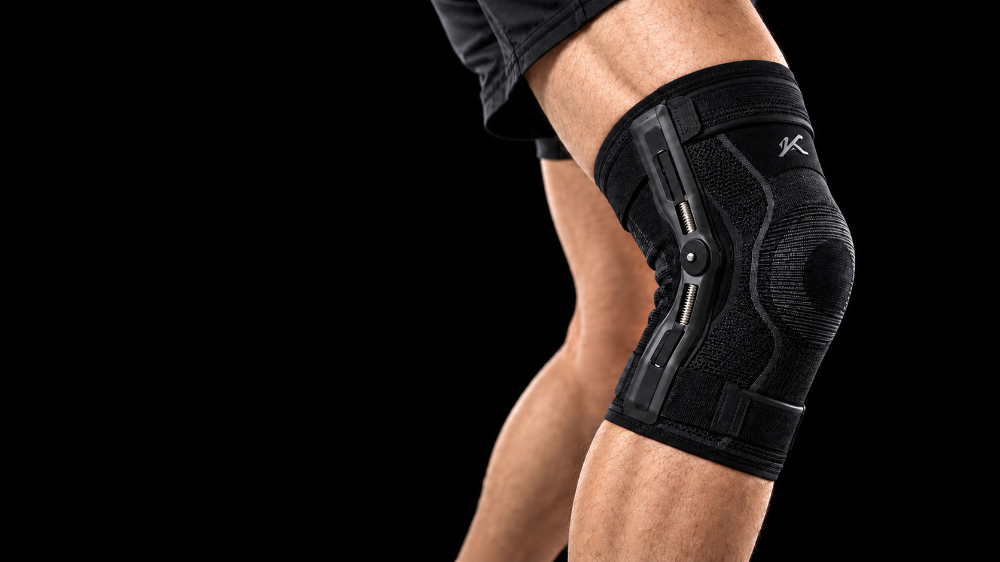

Precision support.
Everyday purpose.
A knee brace sleeve that brings adjustable mechanical support and wearable design together.
Online ordering is being prepared. No payment will be taken. Final fit, availability and delivery details will be confirmed before ordering opens.
Considered mechanics.
Wearable support.
Konarc’s first product focuses on mechanical knee support. Our primary design focus is people experiencing arthritis and other knee problems.
What’s included in this product?
The product presented here is the mechanical knee sleeve, with screw-based adjustable support and straps. The future TENS product is separate.
How do I choose the right fit?
The final sizing guide and fit options will be provided before online ordering opens. We recommend discussing appropriate knee support with a qualified healthcare professional.
Does it include the connected app?
The companion app and sensor functionality are in development. Final compatibility and included features will be confirmed before launch.
When will I receive it?
Shipping, availability and delivery estimates have not yet been confirmed. Online payment is not enabled on this website.